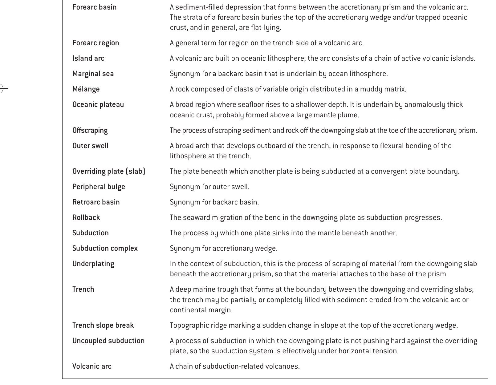

Mechanics & Tectonic Definition: When oceanic lithosphere carrying a veneer of sediment subducts beneath an overriding plate, not all material is scraped off immediately at the trench toe. A substantial volume of sediments and fragments of oceanic crust travels down the subduction channel. As pressure, dewatering, and frictional resistance increase at depths between 5 km and 30 km, slices of these subducting rocks and sediments are detached from the downgoing slab by thrust faults that step down into the footwall. These slices are welded and accreted to the base (underside) of the overriding wedge via duplex structures. This basal accretionary attachment of previously subducting material is precisely defined as underplating (or subduction underplating).
Diagnostic Clue in Question: The phrasing "The rocks and sediments that were subducting sometimes get attached with overriding plates by thrusting" explicitly captures rocks that were already underway in the subduction channel being transferred at depth, which is the textbook distinction between underplating (basal accretion) and offscraping (frontal accretion at the toe).
Definition: Offscraping refers specifically to frontal accretion at the toe of the trench. Before the sediment can subduct beneath the overriding plate, the upper layers of trench turbidites and pelagic muds are peeled off by seaward-verging or landward-dipping imbricate thrusts right at the deformation front.
While both offscraping and underplating are subduction accretion mechanisms, offscraping occurs at the trench surface (toe) before subduction to depth, whereas underplating captures material that was subducting down the interface and becomes attached to the base of the overriding plate.
Definition: Obduction is the tectonic emplacement of a large slab of dense oceanic lithosphere (an ophiolite suite) onto a buoyant continental margin or island arc during an arc-continent or continent-continent collision (e.g., the Semail Ophiolite in Oman). It involves catastrophic overthrusting of an entire oceanic lithospheric section onto continent, rather than routine accretionary transfer of subducting sediments during steady-state subduction.
Definition: In geology, rejuvenation refers to: (1) Geomorphic renewal of stream erosive power caused by base-level fall or tectonic uplift (forming entrenched meanders and river terraces), or (2) Rejuvenated volcanism (post-erosional volcanic stage on oceanic hotspot islands like Oahu, Hawaii). It has no relation to subduction thrust accretion.
| Process | Location / Depth | Structural Style | Material Involved |
|---|---|---|---|
| Offscraping (Frontal Accretion) | Trench toe / Deformation front (0–5 km depth) | Imbricate thrust fans, protothrusts, frontal folds | Unconsolidated trench turbidites, hemipelagic muds |
| Underplating (Basal Accretion) | Base of overriding plate (5–30 km depth) | Antiformal duplexes, basal shear zones, underthrust nappes | Subducted sediment, basaltic ocean crust, chert, melange |
| Subduction Erosion (Tectonic Erosion) | Trench toe or subduction channel | Basal scouring, extensional collapse of forearc | Forearc crust ground up and dragged down into the mantle |
| Obduction | Continental margin collision zone | Major crustal sutures, continental-scale thrust sheets | Complete ophiolite suite (harzburgite, gabbro, sheeted dikes, pillow basalt) |